6．蒙日和特征理论
拉格朗日纯粹是从分析上来进行工作的。蒙日（1746—1818）引进了几何语言。对偏微分方程，他的工作虽不如欧拉、拉格朗日和勒让德那么重大，但是他开创了用几何来解释分析研究的运动，并且因此引进了许多富有成果的想法。他说明：如同包含曲线的问题引导出常微分方程一样，包含曲面的问题就引导出偏微分方程。更一般地，对于蒙日来说，几何和分析是同一个课题，而对该世纪别的数学家来说，这两个分支是分离的，仅有一些接触点。蒙日在1770年开始他的研究，但直到很久以后也没有发表他的成果。
在非线性一阶方程学科中首要的是，蒙日不仅引进几何解释，而且还强调一个新概念——特征曲线(45)。他关于特征的思想以及积分作为包络的思想没有被他同时代的人所理解，还被称为形而上学的原理，但是在后来的研究中特征理论却变成了一种非常重要的主题。在他的讲义和随后的著名出版物《关于把分析应用于几何的活页论文》（Feuilles d'analyse appliquée à la géométrie，1795）中，蒙日把他的思想发展得更加完整。这思想最好用他自己的例子来说明。
考虑半径是常数R，中心在x-y平面上无论何处的双参数球面族。这个族的方程是
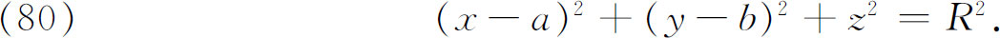
这个方程是非线性一阶偏微分方程
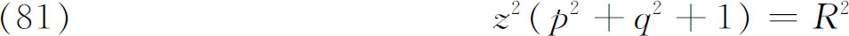
的完全积分，因为（80）包含两个任意常数a和b，并且显然满足（81）。令
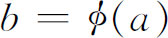
来引进任一子球面族，这是中心在x-y平面上的曲线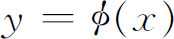
上的球面族。这个单参数球面族的包络（管状曲面）也是（81）的一个解。这个特解可从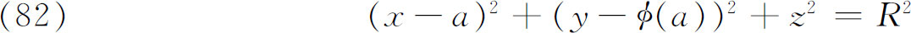
及（82）对a的偏导数，即
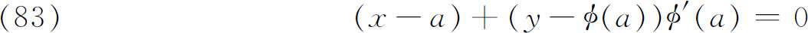
两式中消去a得到。对每一特别选定的a，方程（82）和（83）表示两张特定的曲面，因此联立考察两曲面就表示一条曲线，称为特征曲线。这条曲线也是该子族中两“相邻”曲面的交线。特征曲线的集合填满包络；也就是包络与子族中每一成员沿一条特征线相切触。通积分是特征曲线集合生成的每一曲面（单参数族的包络）的总体。（80）的全体解的包络，也就是奇解z＝±R可从（80）与（80）分别对a，b的偏导数中消去a和b而得到。
特征曲线也以另一种方式表现出来。考察两个球面子族，它们各自的包络沿任一球面相切。我们可称这样的包络是相邻包络。两相邻包络的交线是球面上的特征曲线，它与通过考虑各子族的相邻成员得到的特征曲线是相同的。任一球面可属于包络完全不同的无穷多个相异的子球面族，所以在同一球面上将有不同的特征曲线。所有这些特征曲线都是垂直平面中的大圆。
蒙日建立了特征曲线的微分方程的分析形式，它相当于方程（79）确定（69）的特征曲线这一事实。（蒙日利用全微分方程表示特征曲线的方程。）
蒙日还引进了（1784）特征锥的概念。在空间任一点（x，y，z）（图22.4）可考虑一平面，它的法线有方向数p，q，-1．对一固定的（x，y，z），满足
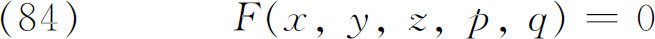
的p和q的集合确定一全部通过（x，y，z）的单参数平面族。这个平面集是一个顶点在（x，y，z）的锥的包络。这就是（x，y，z）的特征锥或蒙日锥。如果我们现在来考察方程为z＝g（x，y）的曲面S，则它在每一（x，y，z）有一个切平面。这样一张曲面是F＝0的积分曲面的必要充分条件是：在每点（x，y，z）上，F的切平面是（x，y，z）处蒙日锥的切平面。积分曲面S上的曲线C称为特征曲线，如果C上每点的切线是蒙日锥在该点的母线。这些特征曲线与蒙日把（80）看成完全积分推得的是同样的，并且也是联立方程（79）的解。蒙日还在1802年收编在他的《分析在几何中的应用》（Application de l'analyse à la géométrie(46)，1807）中的一篇文章中指出：每一积分曲面都是特征曲线的轨迹，并且仅有一条特征曲线通过这一积分曲面的每一点。
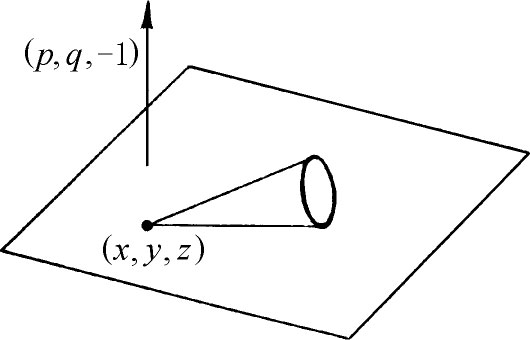
图22.4
特征曲线的重要性在于：如果取一空间曲线
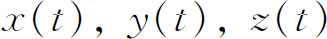
（对t值的某一区间）不是特征曲线，那么恰好存在F＝0的一个积分曲面通过该曲线；即恰好存在一个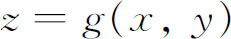
使得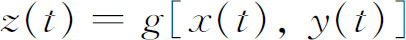
（对t值的范围）。另一方面，如同蒙日在1806年讲义中指出的：对每一特征曲线都能有无穷多个积分曲面通过它。此外，通过该曲线的无穷多个积分曲面都沿这条曲线彼此相切。